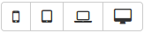
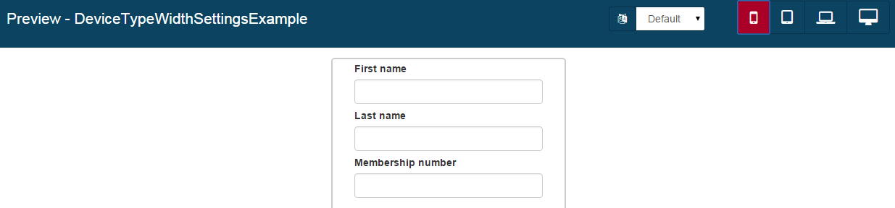
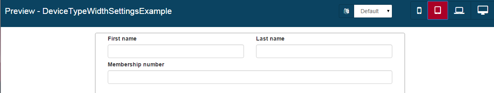
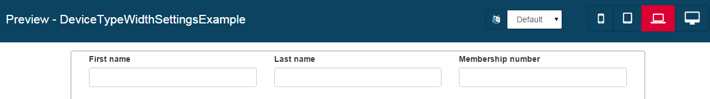
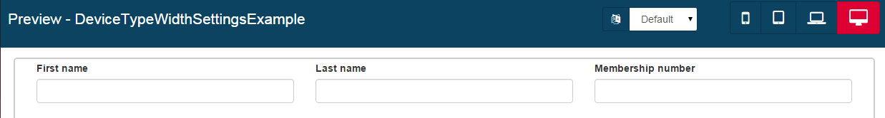

Widget properties
A page is constructed from widgets. The behavior of a widget is determined by the its properties. Any property you configure for a container is applied to all widgets in the container unless you override it with a widget-specific value.
Specifying a widget property
To specify the properties of a widget, select the widget and go to the properties panel on the right of the whiteboard. A property value can be constant, dynamic, a bidirectional bond, or an interpolation.
Note: In versions 7.0 and 7.0.1, a property value was specified as either a constant or an expression, but all values were in fact treated as dynamic.
Constant
A property that requires a constant value is presented in the Properties panel as a radio button set, drop-down list, or number selector (for the Width property). Select the required value.
Dynamic -
Use a dynamic value field to specify a constant (the default) or an expression. Click the expression icon fx to switch from constant to expression. Click the constant icon X to switch from expression to constant. An expression can include a variable to make the property value dynamic, or can simply be the name of a variable. You can apply a filter to a variable value using a pipe. The binding to the variable is a read. If you want to write to the variable, use a bidirectional bond.
Examples:
- Define a condition for widget visibility, userAge > 18
- Define table headers as the value of a variable: myArrayVariable
-
Apply a filter to the value of a variable: _selectedUser json_
Bidirectional bond -
Use a bidirectional field to specify a read-write binding between the property value and a variable.
Interpolation -
Use an interpolation field to enter text to display in the widget. The text can include variables that are interpreted using AngularJS interpolation. When the page is displayed, the variables are replaced by the interpolated values. Specify a variable as a simple expression enclosed in double braces, using the same format as for a dynamic value field.
Example: I’m sorry, __. I’m afraid I can’t do that.
General widget properties
Some general properties are common to all widgets except containers.
Width
Specify the width of the widget relative to the container it is in, or to the page if it is not in a container. A widget can occupy one to 12 units. The actual widget widths are proportional, automatically adjusted for the device display.
In the Enterprise, Performance and Efficiency editions, you can set a different value for the width property for each device type. Select the target device type in the top bar, then set the value of the Width property.

Example: A form has three fields, First name, Last name, and Membership number.
On a mobile device, you want the fields to occupy the maxiumum width of the screen, each one of a separate line.
On a tablet device, you want the first name and last name to be on the same line but the membership number to be on the line below.
For laptop and desktop devices, you want all three fields to be in the same line. Set the width properties as follows:
| Mobile | Tablet | Laptop | Desktop | |
|---|---|---|---|---|
| First name | 12 | 6 | 4 | 4 |
| Last name | 12 | 6 | 4 | 4 |
| Membership number | 12 | 12 | 4 | 4 |
When you preview the form for each of the device types, you see the following:




CSS classes
For each widget, you can associate one or more CSS classes (use a space-separated list for multiple classes).
By default, the Bootstrap CSS library is available so you can add any CSS class that it contains.
Hidden
This property controls whether the widget is hidden. Bind this property to a variable. The value of the variable determines whether or not the widget is displayed. You can use this to control conditional display, for example when a widget becomes visible when the user enters a certain value in a form.
Migrate a page from 7.0.0 and 7.0.1
In Bonita 7.0, property values were all dynamic. Pages and forms that were created with 7.0 and are already deployed will continue to work with 7.1. You should note that when you import a 7.0.0 or 7.0.1 page or form into 7.0.x later versions or the 7.1 Bonita Studio or UI designer, widgets properties stay dynamic.